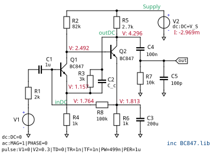

"BJT voltage amplifier"
.inc lib/BC847.lib
.param C_c=18p
C1 c2 out 1u
C2 out 0 100p
C3 e2 0 200u
C4 in b1 1u
C5 c2 e1 {C_c}
Q1 c1 b1 e1 BC847
Q2 c2 c1 e2 BC847
R1 e2 0 1k noisy=1
R2 cc c2 2.7k noisy=1
R3 cc c1 82k noisy=1
R4 b1 e2 100k noisy=1
R5 out 0 10k noisy=1
R6 e1 0 1k noisy=1
R7 c2 e1 3k noisy=1
R8 in 1 2k noisy=1
V1 1 0 DC 0 AC 1 0 PULSE 0 0.3 0 1n 1n 499n 1u
V2 cc 0 DC 12
.end
Go to VampQspice_index
SLiCAP: Symbolic Linear Circuit Analysis Program, Version 5.1.0 © 2009-2025 SLiCAP development team
For documentation, examples, support, updates and courses please visit: analog-electronics.tudelft.nl
Last project update: 2026-08-16 22:47:18